Your folders. Your metadata. Blazing-fast browsing.
Organize once, then enjoy your collection without lag. No proprietary vault, no import step, no cloud lock-in—built in Rust and vanilla JS for speed, interoperability, and file safety.
Free & GPL-3.0 open source·Offline-first (0 network calls by default)·EN / FR interface
Windows 10+ · .msi
Linux · .deb
Tauri v2 · Rust · no Electron
photoboggan — Library · Preview · InfoIn-place on disk
Flexible UI to adapt your workflowRust + SQLite WAL + Tauri
Zero copyYour disk folders stay the single source of truth—no duplicate library or lock-in.
0 pixels touchedMetadata edits never re-encode image data. Atomic writes with read-back check.
200k+ readyVirtual grid (50k/page), 256-folder cache, DCT scaling, and embedded RAW previews.
100% local AIOptional face recognition & SigLIP 2 content search run entirely on your machine.
Built for daily flow
One fluid workspace. Several ways to work & explore.
Toggle only the panels you need: folder tree, albums & filters; preview; keywords, info & description; map — and inspect every screenshot in full resolution.
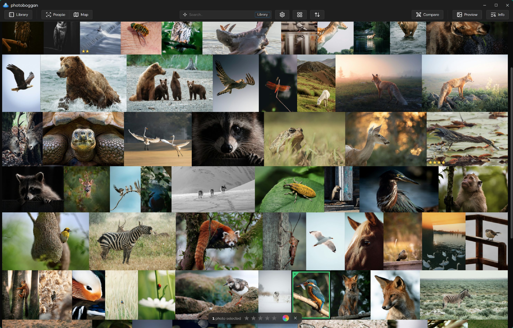
Click to enlarge ↗
Photos first
Fluid virtual grid & instant 1:1 inspection
Scroll massive collections with mouse wheel, drag-and-slide or keyboard navigation, then switch seamlessly to full screen without losing focus.
Justified (uncropped), masonry, square, and framed layouts
Instant 1:1 zoom & pan by holding Z under the cursor
Stars (0–5), color labels, and pick/reject flags with auto-advance
Live histogram, highlight/shadow clipping alerts, and 20-step Undo (Ctrl+Z)
Embedded JPEG previews for RAW files—no slow CPU demosaicing
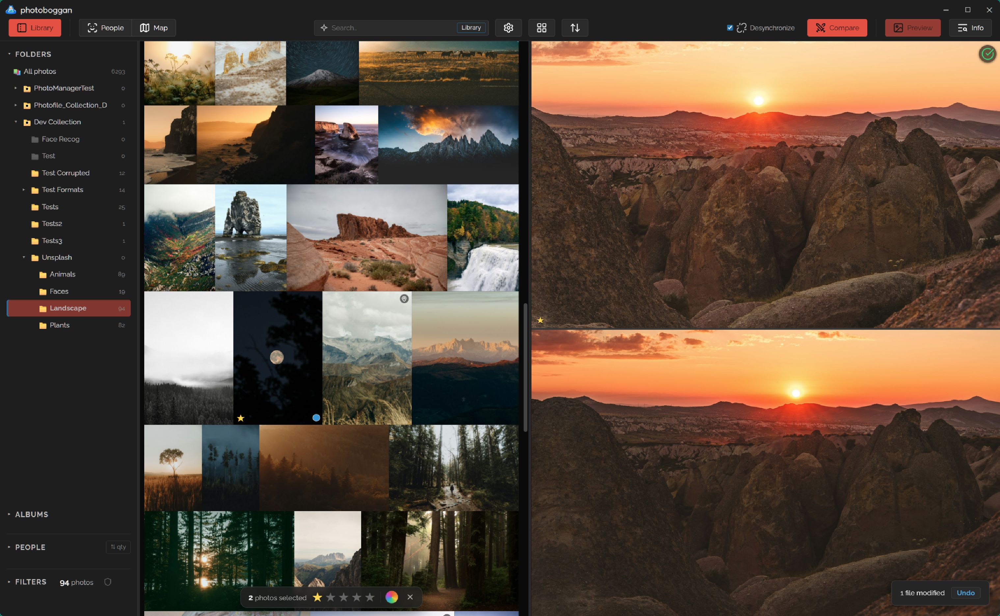
Click to enlarge ↗
Fast culling & tagging
Compare 2–4 shots & batch-tag safely
Pick the sharpest frame side-by-side, then apply hierarchical keywords, titles, descriptions, and author/copyright presets in one clean batch.
Synchronized zoom and pan across 2–4 photos, unlinkable at any time
Sub-select winners or rejects right inside Compare mode
Batch keyword editing preserves existing untouched keywords on each photo
SigLIP 2 text search ("beach at sunset") & visual similarity search
Two-way keyword suggestions—never written to files without your explicit Apply
Background scan automatically pauses whenever you browse, tag, or generate thumbnails
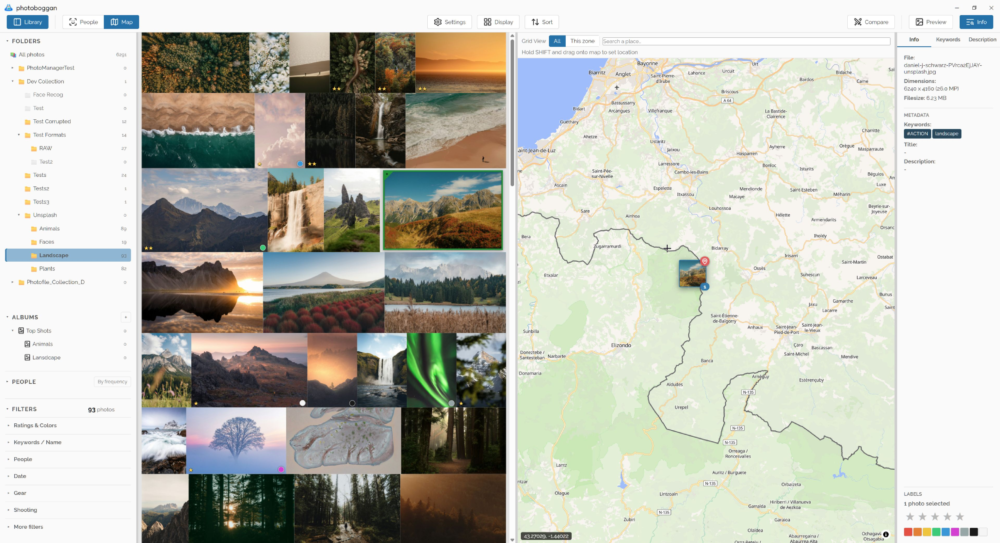
Click to enlarge ↗
Optional · Strict privacy rules
Geotagging that never leaks your home
Browse photos on vector maps, drag selections onto the map to tag locations, or strip GPS coordinates cleanly before sharing.
Filter the grid to the visible map area or search places on demand
Private Zones: draw areas (e.g., Home) or import local .mbtiles
Any tile touching a private zone is served from disk—never requested online
Cache map zones locally to eliminate repeat tile provider requests
Erase GPS before sharing while keeping a restorable local backup
Click to enlarge ↗
Clean up & rediscover
3-way Duplicate Finder, Smart Albums & Stats
Uncover duplicates without false positives on burst shots, combine deep EXIF/keyword filters, and organize with zero file duplication.
Identical image data (ignores metadata changes so re-tagged copies match)
Perceptual similarity (pHash) handles resize/rotation while ignoring bursts
Rank duplicates with custom "Best Copy" rules & jump from JPEG to matching RAW
Manual & nestable smart albums that inherit and refine parent filters
Collection statistics across cameras, lenses, exposure settings, dates, and tags
Engineered for trust
Your originals are sacred.
Every metadata write and file operation follows strict safety invariants—verified by automated unit and ExifTool integration tests.
1
Stage & Lock
Edits stay staged until Apply. Per-file locks serialize writes so two operations never race on one image.
2
Atomic Write
Writes go to a temporary file first, flushed before rename. Pixels are never decoded or recompressed.
3
Read-back Verify
Every written file or .xmp sidecar is immediately re-read. Any mismatch is reported—never masked as success.
4
Recover & Sync
On failure, ExifTool temp copies are preserved or restored automatically, and the SQLite catalog reflects reality.
Interoperable XMP, IPTC & Sidecars
Choose the bundled persistent ExifTool pool (gold standard across formats) or the fast native Rust XMP/IPTC writer. JPEG and HEIC/HEIF are updated in-container; RAW, PNG, and video metadata live in standard sidecars without overwriting shared photo.xmp pairs. Configure your own read-priority order across digiKam, Lightroom, Media Pro, Microsoft, and ACDSee schemes.
Private Photos & Explicit Offline Mode
Define cumulative Privacy Sets (by folder path, keyword, or date range) to hide sensitive photos across the grid, albums, people, and duplicate searches—restored before the UI even renders, with folder deletion blocked while active. Need total isolation? Flip Offline Mode to block every backend & map network call across the app.
Safe File Moves, Trash & Integrity Scans
Cross-drive file moves verify SHA-256 checksums before removing originals. Deletions go to your OS trash (with explicit warning before permanent deletion on network/removable drives). Built-in Integrity Check scans folders for truncated JPEGs or corrupt PNG/WebP/HEIC/RAW previews while generating missing thumbnails in one pass.
Lean Native Stack, Zero Bloat
Powered by Tauri v2, a multi-threaded Rust backend, SQLite WAL, and a pure vanilla JS frontend (no Electron, no React/framework overhead). Place your catalog and thumbnail cache on a fast SSD, pause/resume long scans across restarts, and verify GitHub update installers by published SHA-256 digests.
Full capability overview
Everything you need in a clean UI.
Workflow & UI
Virtual Grid & 4 Layouts
Justified (uncropped), masonry, square, and framed views with 50k-photo pagination, date/folder separators, and drag-inertia scrolling.
Workflow & UI
Fullscreen, 1:1 Hold-Z & Slideshow
Neighbor preloading, hold Z for instant 1:1 cursor zoom, live RGB/luma histogram, clipped highlight/shadow overlay, and configurable slideshow.
Workflow & UI
Compare 2–4 Photos
Inspect sharp focus side-by-side with linked or unlinked zoom/pan, sub-selection checkmarks, and instant rating or deletion.
Workflow & UI
Fast Culling & 20-Step Undo
Stars, color labels, and pick/reject flags (Shift+P/X) with Alt+key auto-advance, lossless metadata rotation, and 20-step Undo.
Workflow & UI
Customizable Workspace
Toggle every panel, pick dark or light theme, customize accent colors, text/panel sizing, hover dimming, and browse the built-in shortcut guide.
Workflow & UI
Virtual & Nestable Smart Albums
Group hand-picked shots into manual albums or create dynamic smart albums—even nested inside other albums to refine parent filter rules.
Metadata & Safety
Hierarchical Keywords & Author Presets
Manage structured keyword trees, batch-edit with Unify without clobbering untouched tags, and recall Author & Copyright presets.
Metadata & Safety
Dual Writer & Read Priority
Use bundled ExifTool or the fast native writer. Customize source priority per field across EXIF, IPTC, and XMP (digiKam, Lightroom, ACDSee, MS).
Metadata & Safety
Safe Sidecars, RAW & Video
RAW uses embedded JPEG previews (zero demosaicing); video opens in your OS player. Sidecar logic protects shared photo.xmp pairs from collisions.
Metadata & Safety
Private Photos & Offline Mode
Hide sensitive folders, keywords, or date ranges behind a lockable shield. Offline Mode disables all map, place, model, and update network calls.
AI, Maps & Search
Deep Exhaustive Filtering
Combine or exclude (Alt) filename, format, keywords, date/calendar, camera, lens, focal length, aperture, shutter, ISO, flash, people, and map bounds.
AI, Maps & Search
Local Face Detection & Review
Optional YuNet + SFace pipeline with live threshold tuning, unknown-face clustering, manual boxes, person merging (with undo), and XMP region write-back.
AI, Maps & Search
SigLIP 2 Content Search & Tag Help
Optional on-device semantic search by text or visual similarity, live relevance slider, and two-way keyword suggestions from your own vocabulary.
AI, Maps & Search
Maps, Geotagging & Private Zones
Optional MapLibre GL maps with drag-to-geotag, reversible GPS erase/restore, offline zone downloads, MBTiles import, and strict Private Zones.
AI, Maps & Search
3-Way Duplicates & Find the RAW
Detect identical pixel payloads, pHash visual lookalikes (ignoring bursts), or matching names. Rank with "Best Copy" rules and match JPEGs to RAWs.
Files & Maintenance
Batch Resize, Move, Copy & Open With
Resize batches preserving ICC profiles & rotated face regions, copy/move with SHA-256 verification and conflict UI, and set per-type external editors.
Files & Maintenance
Integrity Check & Collection Stats
Verify JPEG/PNG/WebP/HEIC/RAW integrity with CSV export, purge orphan thumbnails, move cache to an SSD, and inspect library statistics.
Files & Maintenance
Resumable Queue & Verified Updates
Pause, resume across restarts, or cancel scans with live ETA. Optional GitHub update checks verify installer SHA-256 digests twice before launch.
Inside the interface
Every panel when you need it.
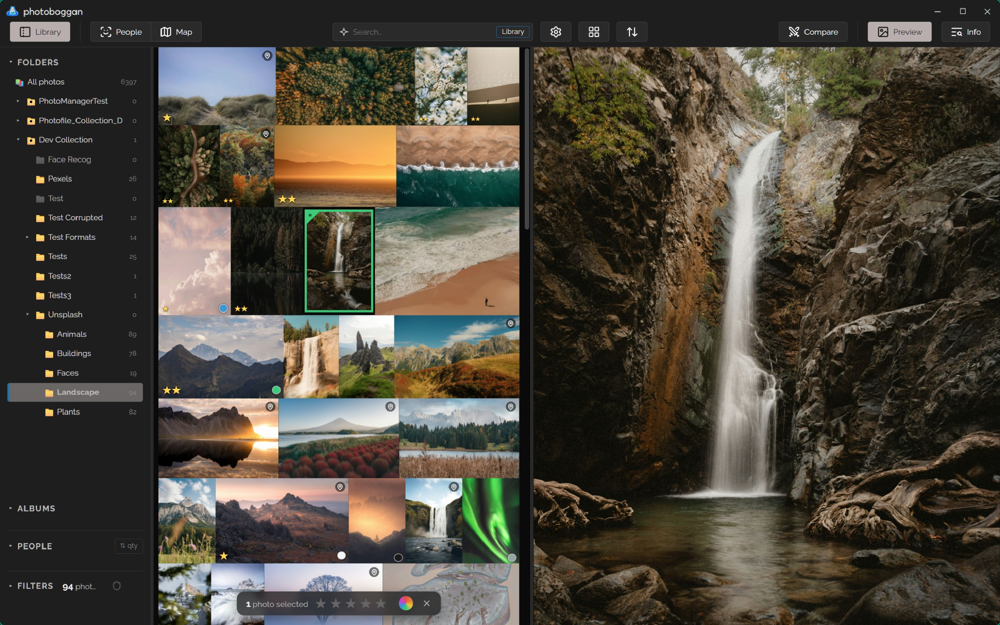
Split Grid & PreviewBrowse thumbnails beside a large image preview.
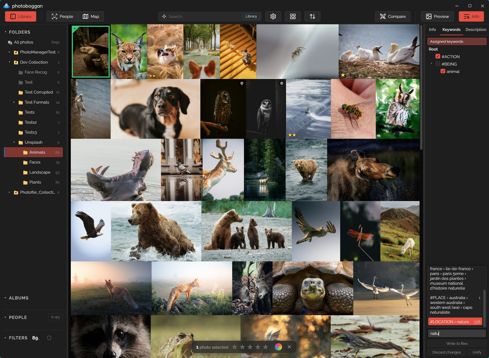
Hierarchical KeywordingTag batches with live autocomplete, merge keywords between photos...
Full-Screen CullingRate and advance directly from the keyboard.
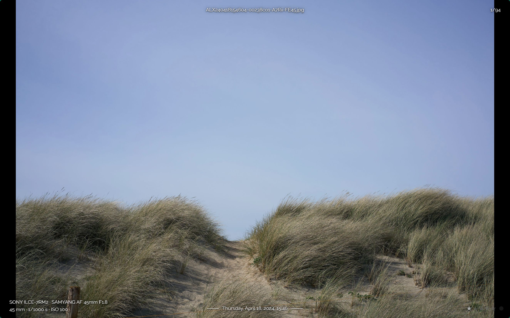
Full-Screen MetadataCamera, lens, and exposure details at a glance.
Vertical FilmstripResize panels down to a narrow strip for focused review.
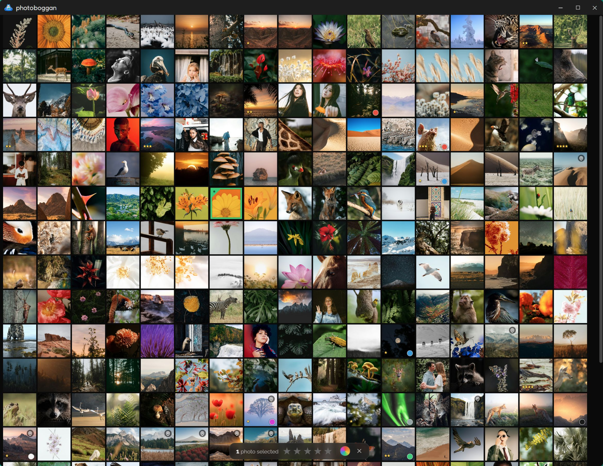
All thumbnails onlyRemove all panels and toolbar, reduce thumbnails size to have a whole sight .
Why photoboggan exists
A silly name. A serious photo tool.
After 25 years of taking photos as a passionate hobbyist and dad, I wanted less time spent repeating organizing chores and more time enjoying the collection.
photoboggan doesn’t ask you to surrender your files to a proprietary catalog or upload family memories to the cloud. Keep your own folder structure, write industry-standard metadata, and turn on optional AI or map tools only when you want them.
Available in English and French, & easily extendable
Compatible with digiKam, Lightroom, ACDSee, and Windows Photos
Zero telemetry—check updates only if you opt in
AI/LLM disclaimer: I have more experience in photography techniques and developping than in code developping. Claude & friends helped make photoboggan possible, but they were micro-managed, under scrutiny, controlled & audited !
Platforms & Status
Get photoboggan
Windows (.msi)English & French installers. Tested daily on real collections.
Daily driver
Linux (.deb)Ubuntu / Debian package (uses system perl for ExifTool). Feedback welcome!
Needs testers
macOS & other packagesNot published yet—open an issue on GitHub if you’d like to help test.
On request
Beta software notice: photoboggan treats file safety as priority #1, but it is still young software—always keep a healthy backup of your photos.
Behind the photos...
More tuning and possibilities....
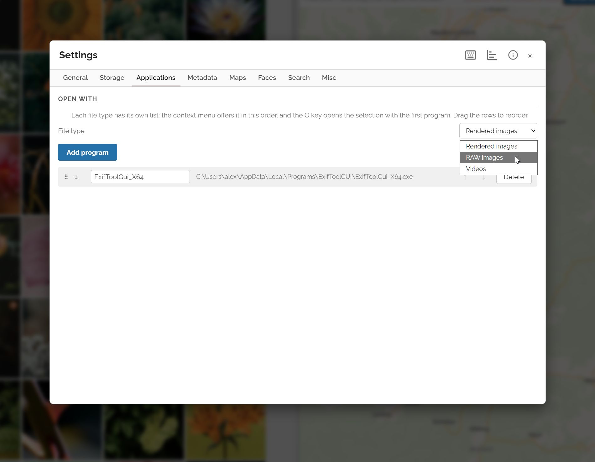
Open with...Choose favorite external apps to open your files with per type (photos, RAW, Videos).
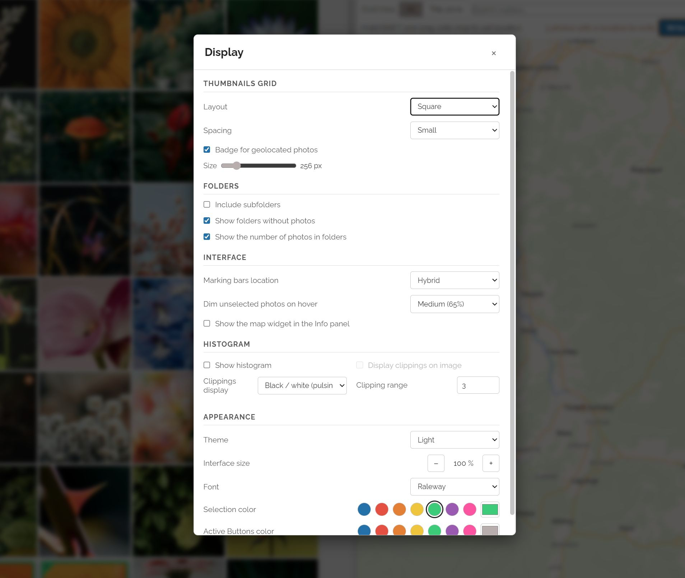
Display optionsTune interface to your needs and taste
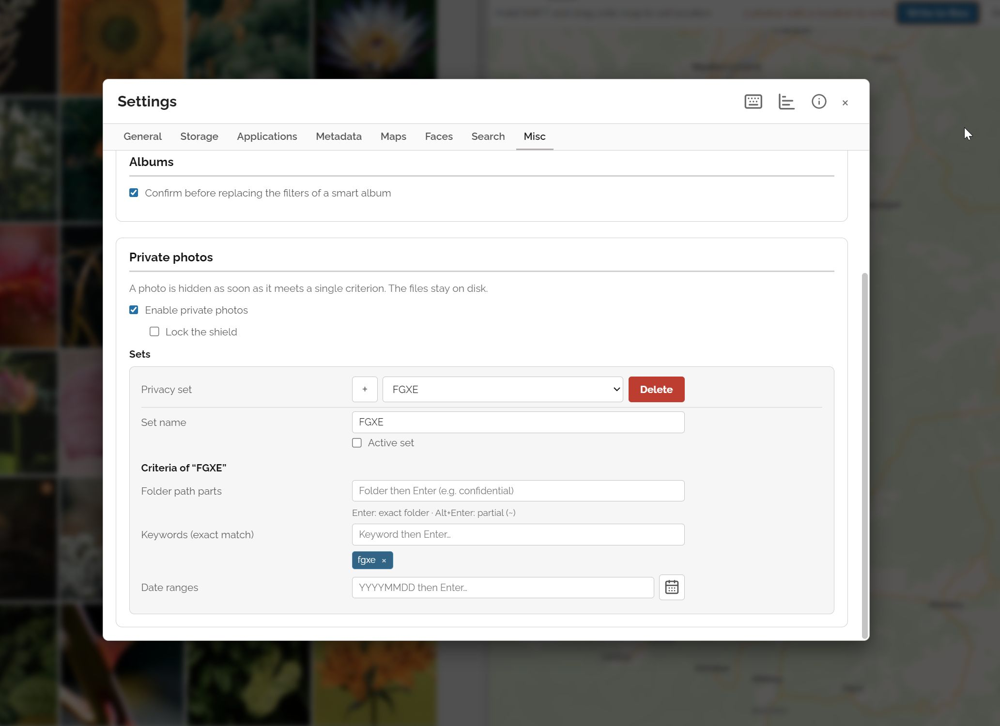
Private photosSet rules to filter sensitive photos out. They can be called quickly from main view and cumulated.
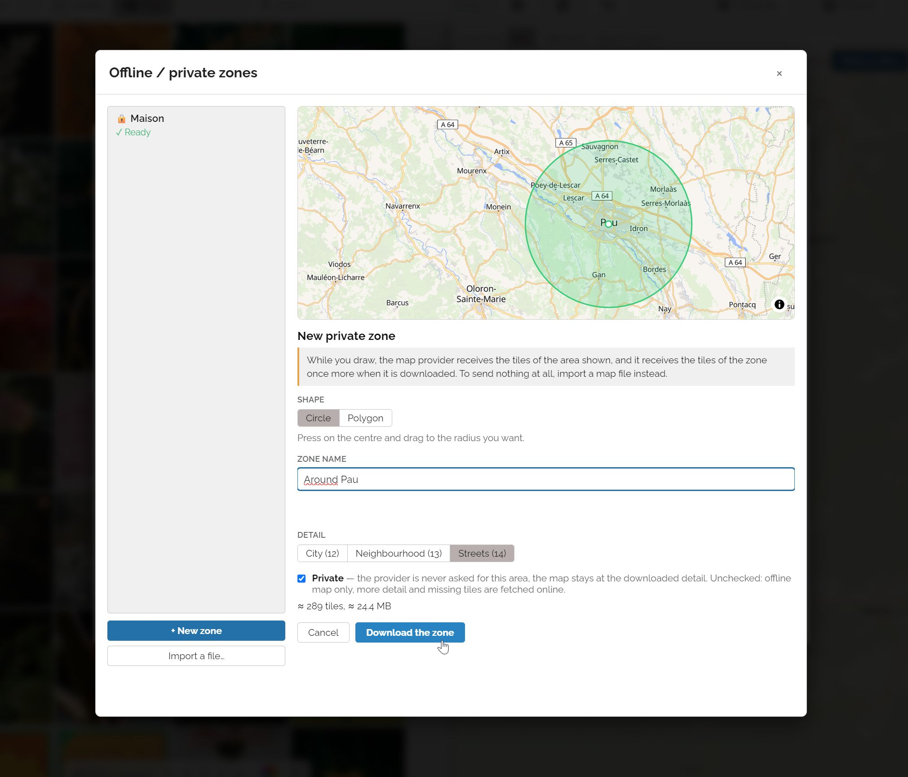
Set private mapsDownload maps to be offline & private in app, or import MBTiles.
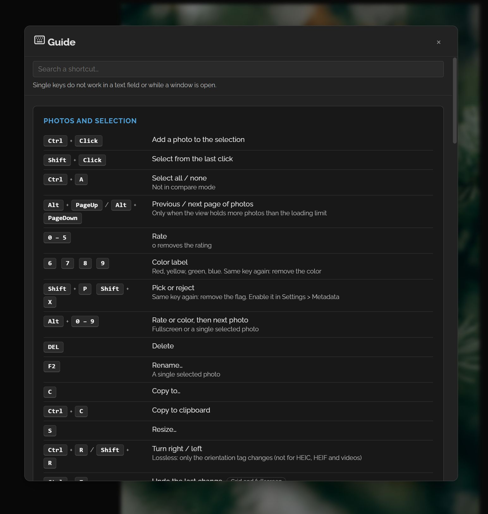
In-app shortcuts guideHit [G] and see a searchable list of all keyboard & mouse shortcuts / actions.
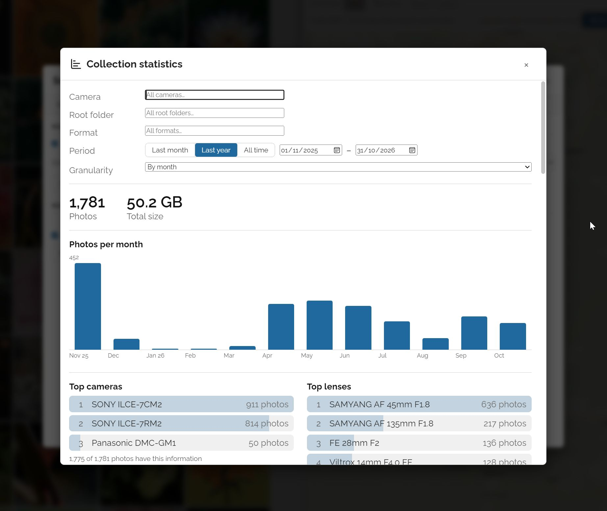
Collection StatisticsSee your collection in time and numbers.
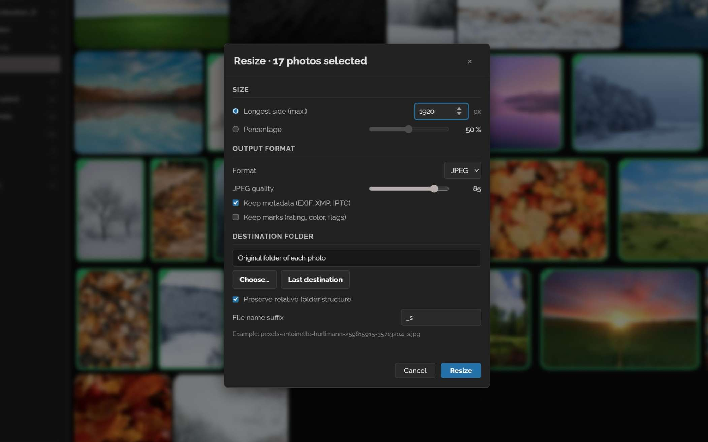
Batch ResizeBatch resize your collection to another folder before sharing.
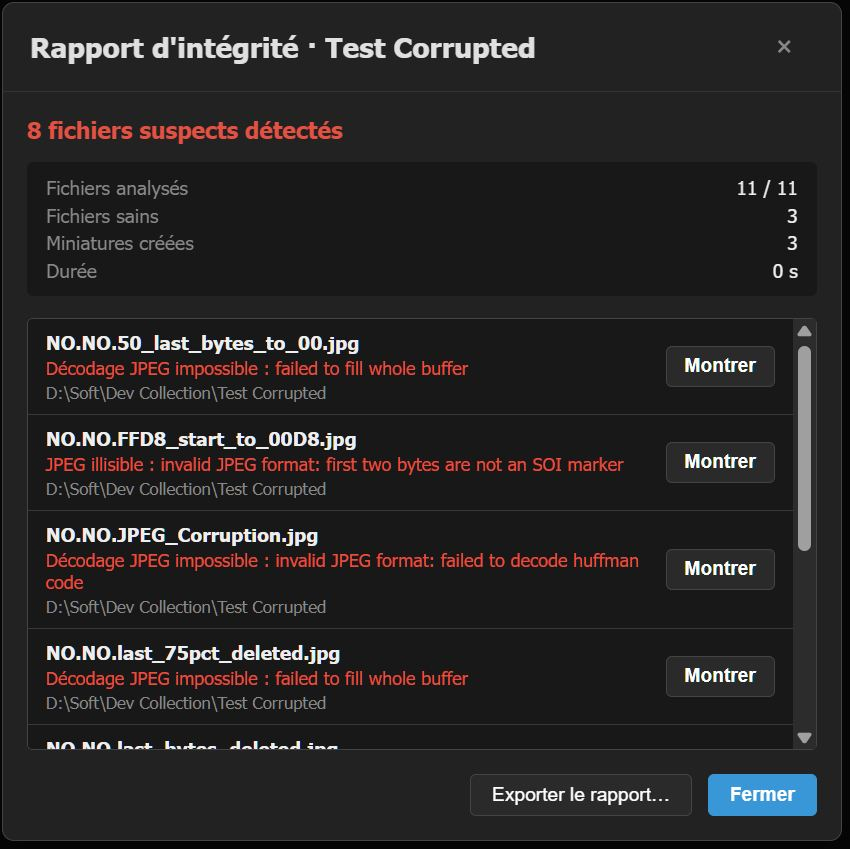
Integrity checkScan your collection for corrupted files. Above results are from a scan on my corrupted file set for benchmarking.
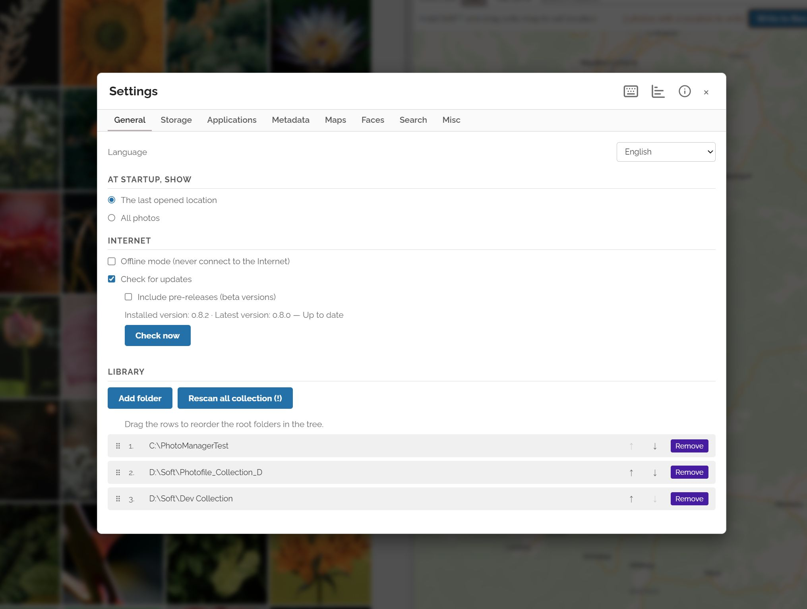
Essential SettingsSet the watched photo folders, data storage location, enable 100% offline mode...
Ready to rediscover your photo library?
Download the latest release on GitHub, read the user guide, or inspect every line of Rust and JavaScript source code.